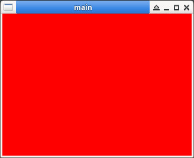

參考資訊：
https://github.com/QMonkey/Xlib-demo
https://people.scs.carleton.ca/~claurend/Courses/COMP2401/Notes/COMP2401_Ch8_Graphics.pdf
main.c
#include <stdio.h>
#include <stdint.h>
#include <unistd.h>
#include <stdlib.h>
#include <X11/Xlib.h>
int main(int argc, char *argv[])
{
const int w = 320;
const int h = 240;
GC gc = 0;
Window win = 0;
Display *display = NULL;
display = XOpenDisplay(NULL);
win = XCreateSimpleWindow(
display,
RootWindow(display, 0),
0,
0,
w,
h,
0,
0,
0xffffff);
XStoreName(display, win, "main");
gc = XCreateGC(display, win, 0, NULL);
XMapWindow(display, win);
XFlush(display);
usleep(100000);
XImage *ximage = NULL;
Visual *visual = DefaultVisual(display, 0);
int i = 0;
int j = 0;
void *pixels = malloc(w * h * 4);
uint32_t *p = (uint32_t *)pixels;
for (i = 0; i < w; i++) {
for (j = 0; j < h; j++) {
*p++ = 0xffff0000;
}
}
ximage = XCreateImage(display, visual, 24, ZPixmap, 0, pixels, w, h, 32, 0);
XPutImage(display, win, gc, ximage, 0, 0, 0, 0, w, h);
XFlush(display);
usleep(3000000);
free(pixels);
XUnmapWindow(display, win);
XDestroyWindow(display, win);
XCloseDisplay(display);
return 0;
}
編譯、測試
$ gcc main.c -o main -lX11 $ ./main
